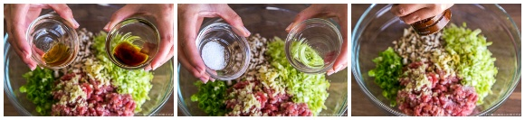

1 .Gyoza are best stored in the freezer before they are cooked. If you properly save them, they last in the freezer for up to a month!
2 .Why we don’t cook first and freeze? When you freeze gyoza after being cooked, they lose the crispness and will turn soggy and too soft after reheating.
3. As cabbage leaves are thick and hard, we use different ways to wilt them. You can blanch or microwave the leaves for a minute or two. You can also sprinkle them with salt to dehydrate the cabbage, then squeeze the water out. Or you can skip the entire process altogether.
4. Discard the thick core of 5 oz green cabbage; mince the leaves into very small pieces.

5. Mince 2 green onion/scallion and 2 shiitake mushrooms into small pieces.
6. Combine the cabbage, green onions, shiitake mushrooms, and ¾ lb ground pork in a large bowl.
7. Mince or press 2 cloves garlic (I like this garlic press) and add to the bowl. Then, grate the ginger with a microplane zester or ceramic grater and add 1 tsp ginger (grated, with juice) to the bowl.
8. Next, add the seasoning ingredients to the bowl: 1 tsp sake, 1 tsp roasted sesame oil, 1 tsp soy sauce, ¼ tsp Diamond Crystal kosher salt, and ⅛ tsp freshly ground black pepper.

9. Prepare a small bowl of water. Open 1 package gyoza wrappers; make sure to cover them under a damp towel or plastic wrap so they don‘t dry out. To add the filling, place one wrapper in the palm of your non-dominant hand. Use a teaspoon to put a small amount of filling in the center of the wrapper. Dip one finger in the water and draw a circle around the outer ¼ inch (6 mm) of the wrapper with your wet finger until it’s wet all around.
10. Fold the wrapper in half over the filling and pinch the wrapper at the top of the half circle with your fingers, but don’t seal it yet.
11. Hold the wrapper in your left hand. Starting near the top center, fold a pleat on the top half of the wrapper using the thumb and index finger of your right hand; the pleat should lean toward the center. Use your left thumb and index finger to press the folded pleat tightly against the back half of the wrapper. Repeat folding along the right side about once every ¼ inch (6 mm), making a total of 3–4 pleats.
12. Continue with the left side of the gyoza, making 3–4 pleats with your left hand, starting in the center and moving toward the left side
13. Press the pleats one last time and shape the gyoza to create a flat side on the bottom. Repeat folding the remaining wrappers.
14.If you want to store some uncooked gyoza for later (optional), now is the time to freeze them. Before the filling starts to release moisture and make the wrappers soggy, lay out the gyoza on a sheet pan or plate in a single layer so they‘re not touching. Then, cover with plastic wrap and “flash freeze” them in the freezer until solid (or at least frozen on the outside). Once the gyoza are solid, pack them in an airtight bag to freeze. Because you flash froze them, the gyoza won’t stick to each other in the bag. Store the gyoza in the freezer for up to a month. When you’re ready to cook the gyoza, do not defrost them. Place the frozen gyoza in your frying pan and steam them for an extra 1–2 minutes (see cooking instructions below).